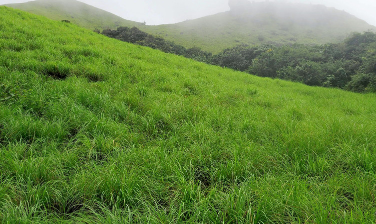

The northernmost district of Kerala, Kasaragod is renowned for its hills, forts and water bodies. The coir and handloom industry here are extremely famous around the world. The place is also popular for its ancient temples and rich biodiversity. It is an important border district as well that regulates trade with a lot of neighbouring States. Legends regarding the district greet you at every turn on a visit here. A trip here is incomplete without visiting Bekal Fort, the most majestic and well maintained fort in South India.
The 300 years old defensive mechanism which is the largest and well-preserved fort makes it one of the best Kasaragod tourist place. You can get an enthralling view of the mesmerizing Arabian sea from the fort’s observation tower which was once used to fire the cannons! The impressive strength of the fort brings a herd of tourists to witness the glorious past and be awestruck. Visit an old mosque near this fort to dive deeper into history.
Previously known as Madathumala, situated 750 meters above sea level, this destination boasts of some of the marvelous trekking trails of about two and a half kilometers with a cave at the summit. If seeking leisure the greens of shola woods and monsoon forests have all their natural beauty to offer you. A combination of both adventure and leisure marks this place to be counted as one of the considerable tourist places on Kasaragod. Be it an adventure folk or solace seeker, this is one destination for all kinds of travelers.
An ideal locale for a peaceful vacay! If rare and unexplored fauna catches your attention then you must visit this beach in the monsoon season to watch some olive ridley turtles. Watch the sand turn golden and the sun setting with vivid colors. Just sit in silence and see the wonders nature has to offer or have a frolicking time with your troop at one of the best tourist places in Kasaragod.